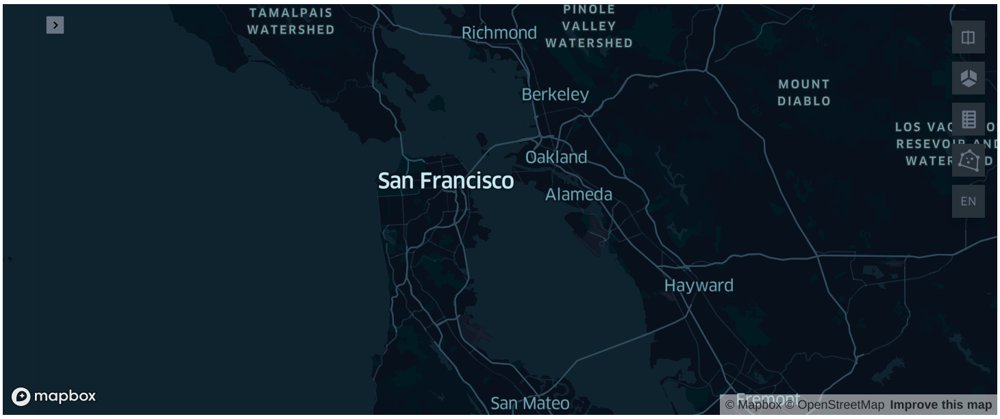

Visualizing Spatiotemporal Information via Kepler.gl¶
Kepler.gl is a powerful open source web application for geospatial analytic visualizations. After importing Kepler.gl into Jupyter Notebook, you can get vivid and intuitive rendering of spatiotemporal data. This article shows how to use Kepler.gl to display the spatiotemporal information output by Arctern.
Installing Jupyter Notebook and Kepler.gl¶
In the next sections, you need to use Jupyter Notebook for running Python codes and Kepler.gl for visualizing spatial data. Run the commands below to install Jupyter and Kepler.gl if you have not installed them yet:
# Enter the Conda environment
$ conda activate arctern_env
# Install Jupyter and Kepler.gl
$ conda install -c conda-forge jupyterlab
$ pip install keplergl
Loading Kepler.gl map¶
Use KeplerGl to create a map object named map_1：
# Load an empty map
>>> from keplergl import KeplerGl
>>> map_1 = KeplerGl()
>>> map_1

Adding data¶
Create two LINESTRING objects (road1, road2) to represent two roads, and save the geographic information of these roads in df. Then, use add_data to add df as input dataset to the map.
>>> import pandas as pd
>>>
>>> # DataFrame
>>> df = pd.DataFrame({'geos': ['LINESTRING (-73.996324 40.753388, -73.972088 40.743215)', 'LINESTRING (-73.989555 40.741531, -73.973952 40.762962)']})
>>> map_1.add_data(data=df, name='data_1')
>>> map_1
Reference¶
For more examples and interface descriptions, please refer to the usage of Jupyter Notebook on Kepler.gl website.